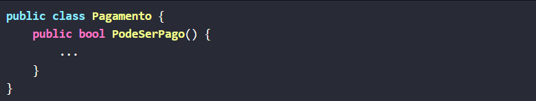
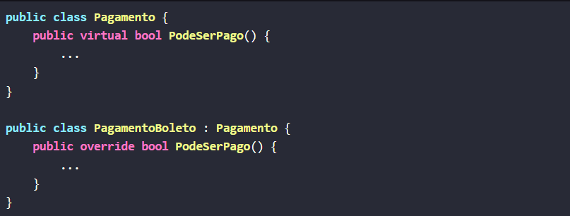
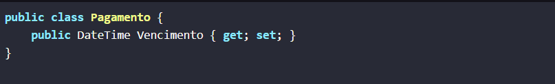
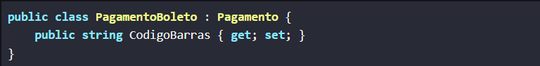
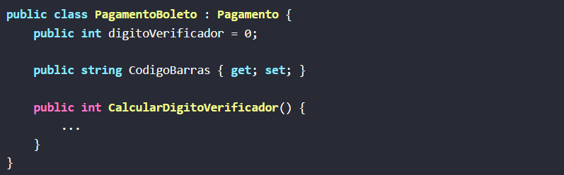

Orientação a Objetos
Polimorfismo:
Polimorfismo é tipo quando você tem uma função ou um método que pode se comportar de maneiras diferentes dependendo de qual classe você está usando. Por exemplo, se você tiver uma função chamada desenhar() e várias classes como Círculo, Quadrado e Triângulo, cada uma pode ter uma forma diferente de desenhar, mas você pode chamar desenhar() da mesma forma para qualquer uma delas.
Exemplos em java:
 Herança:
Herança é como quando você faz uma nova classe baseada em uma classe já existente. Por exemplo, você ter uma classe Animal que tem um método falar(). Se você cria uma classe Cachorro que herda de Animal, o Cachorro vai ter o método falar() automaticamente, mas você pode também adicionar coisas novas ou mudar como o falar() funciona só para o Cachorro. Assim, você reutiliza o código que já existe.
Exemplos em java:
 Abstração:
Abstração é como se você estivesse usando um carro. Você não precisa saber exatamente como o motor funciona para dirigir o carro, só precisa saber que, para andar, você precisa girar a chave de ignição e usar o acelerador. Da mesma forma, na programação, abstração é mostrar só o que é importante e esconder os detalhes complicados de como as coisas funcionam por dentro.
Exemplos em java:
Encapsulamento:
Encapsulamento é como quando você tem uma caixa com uma fechadura. Você coloca coisas dentro da caixa e só pode tirar ou colocar coisas usando a chave. Na programação, é a mesma ideia: você coloca os dados dentro de uma classe e só permite que eles sejam acessados ou modificados através de métodos específicos. Assim, você protege os dados e evita que sejam mudados de maneiras inesperadas.